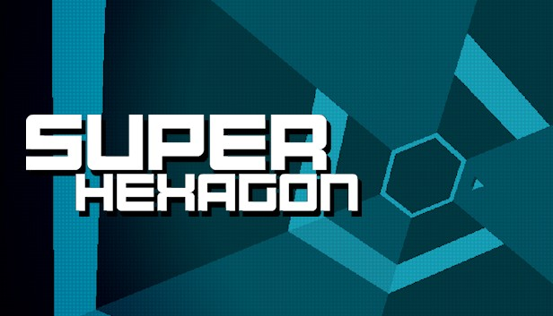
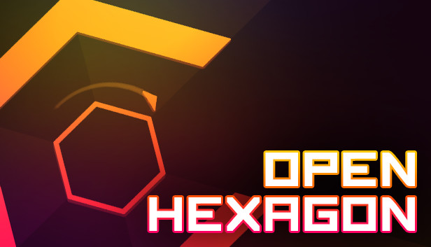

Super Hexagon is een videogame gereleased in 2012 door Terry Cavanagh.
Het doel van de game is om zo lang mogelijk de muren te ontwijken door te bewegen rond een centrale zeshoek.
De game werd zeer goed ontvangen en kreeg later een open-source communitygemaakte versie genaamd Open Hexagon.
